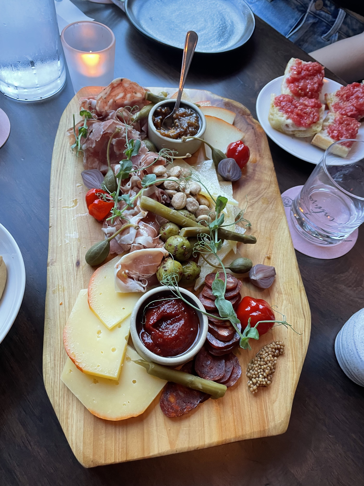

Ann Arbor Restaurants
Are you a foodie? Do you love Ann Arbor? Looks like you've come to the right place.
Here, we've highlighted some of our favorite restaurants from all over AA. Check out the following pictures!
Fresh Forage - 5060 Jackson Rd
Avalon Cafe - 120 E Liberty St
Venue by 4M - 1919 S Industrial Hwy
Café Zola - 112 W Washington St

Palio - 347 S Main St

Jagged Fork - 414 S Main St
Aventura - 216 E Washington St
Bopjib - 621 Church St
Angelo's - 1100 Catherine St

TAQ - 106 E Liberty St
Slurping Turtle - 608 E Liberty St
Baba Dari - 601 Packard St

Zingerman's Delicatessen - 422 Detroit St

Stray Hen - 403 E Washington St

Moon Cafe - 812 S State St
Frita Batidos - 117 W Washington St
Joe's Pizza - 1107 S University Ave